por ejemplo:

Jesus Félix Fontestad, Miguel Guasp Carrascosa, Berta Morata García
La utilización de sustancias radiactivas es la base de la Medicina Nuclear (MN), sin ellas no existiría esta especialidad médica. Por este motivo, el conocimiento de las características, propiedades y comportamiento físico de este tipo de átomos resulta imprescindible para comprender el proceso de obtención de las imágenes de la MN.
La parte más pequeña de materia que podemos considerar es el átomo, que a su vez está compuesto por una agrupación de partículas elementales conocidas como protones, neutrones y electrones. El electrón posee una carga eléctrica negativa, el protón positiva y del mismo valor que la del electrón, y el neutrón no posee carga. Respecto a su masa, si se toma como unidad la masa del electrón (0,9*10 -27 g), tanto el neutrón como el protón poseen una masa que es del orden de 1800 veces la del electrón.
| 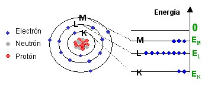 |
|
Figura 1.- Átomo de Bohr |
De acuerdo con el modelo atómico de Bohr (Fig. 1), estas partículas se agrupan formando un núcleo central que contiene neutrones y protones que reciben el nombre de nucleones, mientras que los electrones se encuentran distribuidos en órbitas que giran alrededor del núcleo. El diámetro del núcleo es unas 10000 veces más pequeño que el del átomo.
En cada órbita o capa solo puede haber un número máximo de electrones; que viene dada por la expresión 2n 2 , siendo n el número de la capa, además, a cada una de las capas le corresponde un nivel energético o energía de enlace que representa la energía que hay que comunicar a los electrones pertenecientes a dicha capa para arrancarlos del átomo. Por convenio a las distintas capas se las designa en función de la distancia al núcleo por las letras K, L, M, N,... siendo la K la más próxima al núcleo y la que tiene una mayor energía de enlace y menor nivel energético.
En su estado fundamental, todos los electrones de un mismo elemento se encuentran ocupando los mínimos niveles energéticos permitidos y como el número y la distribución de los niveles energéticos son distintos para cada elemento, representan una identificación única para el mismo. Asimismo en el estado fundamental el número de protones es igual al de electrones, por lo que en su conjunto el átomo presenta una carga nula.
La combinación de varios átomos da lugar a la formación de las moléculas, por ejemplo la molécula de oxigeno está formada por dos átomos de oxígeno y se representa como O 2 , la del agua dos átomos de hidrógeno más uno de oxígeno y se representa como H 2 O
Existen algo más de cien elementos químicos distintos en la naturaleza. La diferencia entre ellos se debe a que poseen distinto número de protones.
En un átomo, el número de protones que existen en el núcleo recibe el nombre de número atómico y se le designa por la letra Z. A la suma del número de protones más neutrones se la designa con la letra A y recibe el nombre de masa atómica. En el núcleo existen unas fuerzas nucleares que permiten mantener la cohesión entre los protones y neutrones que se denomina energía de enlace W.
Los tres parámetros A, Z y W definen a un nucleido. Una forma de representar un nucleido es colocando junto a su símbolo químico X, los valores de A y Z, en la forma AzX, por ejemplo: 13125I, 20181Tl, que representan los nucleidos del yodo 131 y del talio 201 respectivamente. Existen sin embargo nucleidos que teniendo el mismo valor de Z, tienen valores distintos de A, por tener distinto número de neutrones, este tipo de nucleidos reciben el nombre de isótopos, por ejemplo: 21H, 31H, que representan a los dos isótopos del hidrógeno deuterio y tritio respectivamente.
Una característica importante es que las propiedades químicas de todos los isótopos de un mismo elemento son idénticas, es decir presentan el mismo tipo de reacciones, se metabolizan de la misma forma, etc. Esto se debe a que en las reacciones químicas entre átomos, intervienen solamente los electrones de la corteza y todos los isótopos de un elemento tienen el mismo número y distribución de electrones.
Existen otros nucleidos, que aun teniendo el mismo número de A y Z, tienen una energía de enlace nuclear W distinta, reciben el nombre de isómeros. Presentan lo que se denomina un estado excitado del núcleo y tienden hacia la estabilidad o de mínima energía emitiendo la energía sobrante. Se les designa añadiendo una letra m a su masa atómica, por ejemplo, el isómero del Tecnecio: 99m43Tc, que es la sustancia radiactiva más utilizada en MN y que se le conoce como Tecnecio 99 metaestable.
Aunque la gran mayoría de nucleidos que existen en la naturaleza son estables, es decir que no se modifican con el tiempo sus características Z, A y W, existen una serie de nucleidos que no cumplen esta condición y se les denomina nucleidos inestables o radionucleidos y en ellos se produce una desintegración espontánea del núcleo con la emisión de partículas y radiación.
Este fenómeno que recibe el nombre de radiactividad, fue descubierto en el año 1896 por Henri Becquerel cuando comprobó que unas sales de uranio eran capaces de impresionar por si solas una placa fotográfica.
Con este nombre se designan los procesos mediante los cuales un radionucleido alcanza la estabilidad, mediante la emisión de partículas elementales y ondas electromagnéticas (rayos gamma), dando lugar a la aparición de nuevos nucleidos que a su vez pueden ser estables o inestables, en este último caso dan lugar a nuevos procesos de desintegración. De esta forma se genera una cadena de partículas y nuevos nucleidos que asemejan a un árbol genealógico, en el que el "padre" es el radionucleido origen y el resto representan los "hijos" resultantes de la desintegración.
Los procesos básicos de desintegración son: desintegración alfa, desintegración beta, desintegración gamma y captura electrónica. Todos ellos cumplen tres leyes fundamentales: conservación de la energía, conservación del número másico y conservación de la carga eléctrica.
En este tipo de desintegración el radionucleido emite una partícula alfa, que es estable y formada por dos protones y dos neutrones, es decir, un núcleo de helio. Se representa 42 He, y de acuerdo con las leyes de conservación, se puede presentar mediante la ecuación:
| 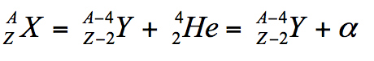 |
|
por ejemplo: |
| 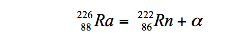 |
en este caso el nucleido hijo resultante es un isótopo del gas radón, que a su vez es inestable y se desintegra mediante una desintegración alfa.
Existen dos tipos de desintegración β, la desintegración β- y la β+. según que se produzca la emisión de un electrón o de un positrón. El positrón es la antipartícula del electrón, tiene su misma masa pero con una carga positiva del mismo valor que la del electrón.
Las partículas b, en cada tipo de desintegración, se emiten con velocidades distintas y como la energía de una partícula material depende de su velocidad, se dice que se emiten con energías variables. Desde un punto de vista práctico, solo se consideran la energía media y la máxima.
Se produce cuando un neutrón del núcleo se transforma en un protón y un electrón, por lo tanto el núcleo hijo tendrá el mismo número másico A, ya que la suma de protones y neutrones no se modifica, pero como el número de protones aumenta en una unidad, el valor de Z pasará a ser Z+1, según la ecuación:
| 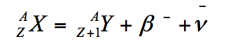 |
|
por ejemplo: |
| 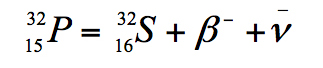 |
la partícula -ν recibe el nombre de antineutrino, su masa en reposo es casi nula, no tiene carga eléctrica y resulta muy difícil de detectar. No tiene ninguna importancia desde el punto de vista radio-biológico.
Se produce cuando un protón se transforma en un positrón y un neutrón, según:
| 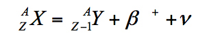 |
|
por ejemplo: |
|
la partícula ν recibe el nombre de neutrino y sus características son similares al antineutrino.
Este proceso también se conoce como transición isomérica, y se produce cuando el núcleo se encuentra con un exceso de energía respecto a la de su estado fundamental, en esta situación el exceso de energía se emite en forma de radiación electromagnética que recibe el nombre de radiación gamma. Se puede representar por la ecuación:
| 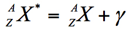 |
Un ejemplo de este proceso es el de la desintegración del 99m43Tc, (tecnecio 99 metaestable) y que usualmente se representa de la forma: 99m Tc, que es el radionucleido de mayor uso en medicina nuclear y que se desintegra con la emisión de radiación gamma con una energía de 140 keV
En este proceso un protón del núcleo “captura” un electrón de la corteza electrónica y se transforma en un neutrón, según el proceso:
| 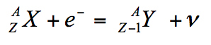 |
|
por ejemplo: |
| 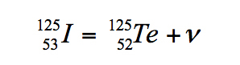 |
Los procesos de desintegración radiactiva son fenómenos aleatorios que siguen la ley de desintegración radiactiva, de forma que si en una muestra tenemos en un instante dado N 0 átomos radiactivos de un mismo elemento, al cabo de un tiempo t posterior, el número de átomos radiactivos existentes, viene dada por la expresión:
| 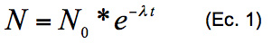 |
en esta expresión, λ recibe el nombre de constante de desintegración radiactiva, que es característica de cada radionucleido, tiene unidades de inversa de tiempo y representa la probabilidad que tiene cada núcleo radiactivo del elemento considerado de desintegrarse.
Si en la Ec. 1, se determina el tiempo necesario (T 1/2 ) para que el número de átomos iniciales se reduzca a la mitad (N 0 /2) , se obtiene que T 1/2 = ln(2)/λ = 0,693/λ. Al valor de T 1/2 se le denomina periodo de semidesintegración que es típico de cada radionucleido. En los radionucleidos utilizados en MN, este valor puede oscilar entre varios minutos hasta un par de meses.
La actividad es la magnitud utilizada para expresar la cantidad de radionucleido que contiene una sustancia radiactiva y representa el número de transformaciones nucleares espontáneas que se producen en un segundo.
La unidad en el Sistema Internacional (SI) es el bequerelio (Bq), que representa una desintegración por segundo. La unidad antigua es el curio, siendo 1 curio = 3,7 x 10 10 Bq, como submúltiplos se utiliza el mili curio (mCi = 37 x 10 6 Bq = 37 MBq) y el micro curio (μCi = 37 x 10 3 Bq = 37 kBq).-
El electrón-voltio (eV) es la unidad de energía utilizada en física atómica y es la energía que un electrón adquiere cuando es acelerado por una diferencia de potencial de un voltio y representa un valor de 1,6*10 -19 J (julios). Como múltiplos se utilizan el kilo-electrón-voltio (keV) y el mega-electrón-voltio (MeV), siendo 1 keV=1000 eV y 1 MeV = 10 6 eV.
| 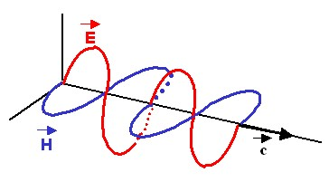 |
|
Figura 2.- Onda electromagnética |
Las ondas electromagnéticas (OEM) son una forma de energía que se propaga sin necesidad de un soporte material; y que están formadas por un campo magnético oscilante H y un campo eléctrico oscilante E, de la misma frecuencia, en fase y perpendiculares entre si y a la dirección de propagación (Fig. 2). Se propagan a la velocidad c de aproximadamente 300000 km/s en el vacío.
| 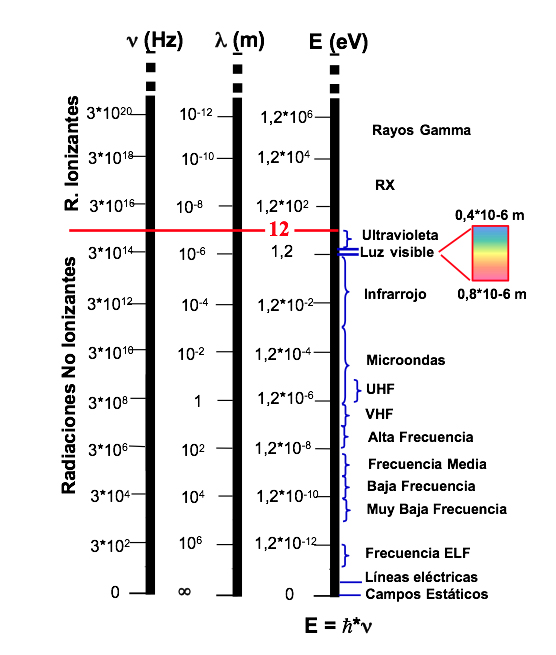 |
|
Figura 3.- Espectro electromagnético |
Existen multitud de fenómenos que se manifiestan mediante las OEM: la luz que nos llega del sol o la que emite una vela encendida, los rayos X, rayos gamma, la señal de televisión que captamos con la antena, las microondas que genera un calentador de uso doméstico, etc.. La diferencia entre unas u otras se encuentra en su frecuencia de vibración y el conjunto de todas ellas, se pueden agrupar en lo que se conoce como espectro electromagnético (Fig. 3).
Algunos de los fenómenos que se producen con las OEM, se explican suponiendo que están formados por unas "partículas virtuales" que reciben el nombre de fotones, que representan un paquete de energía de valor igual a ℎ*n siendo ℎ la constante de Planck y ν la frecuencia de la OEM. Los fotones no tienen carga y sin masa en reposo que se introducen para explicar los fenómenos de interacción de las radiaciones electromagnéticas con la materia. En general se utiliza indistintamente la palabra fotón, rayos X o radiación gamma. La diferencia que existe entre los rayos X y la radiación gamma, es que los rayos X proceden de la corteza atómica y la radiación gamma del núcleo atómico.
De una manera general al hablar de un haz de radiación, nos estamos refiriendo a una entidad que transporta energía bajo la forma de partículas materiales u ondas electromagnéticas. En ese sentido nos podemos referir a un haz de electrones, de fotones, de rayos X, etc.
Una de las características de las radiaciones ya sean corpusculares (que tienen masa) o electromagnéticas (formadas por ondas), es la capacidad de penetrar en los medios materiales e interaccionar con los átomos de los mismos, dando como resultado una modificación en la trayectoria y/o una pérdida de energía de la radiación, que es absorbida por el medio material, de tal forma que si no se produce ninguno de estos fenómenos, se dice que no se ha producido interacción.
Dos son las entidades que intervienen en la interacción: el haz de radiación y el material con el que interacciona, que recibe el nombre de "blanco". Cuando el haz de radiación esta constituido por partículas materiales, se suele emplear el término "colisión" (en recuerdo de las colisiones de la mecánica clásica) para indicar que se ha producido una interacción.
La interacción de radiación con la materia se explica mediante distintos mecanismos cuya probabilidad de ocurrencia depende de las características del haz (tipo de radiación y energía) y del medio material (estado físico, composición, etc.), siendo por lo tanto de naturaleza aleatoria. El conocimiento de estos mecanismos es fundamental para comprender los sistemas de detección (que son la base de la medicina nuclear), medida de la radiación y los efectos biológicos que se producen cuando el medio material es un sistema biológico.
Al tratar del modelo atómico de Bohr, se indicaba de la existencia de las órbitas atómicas y de cómo a cada una de ellas le corresponde una energía o nivel energético que representa la energía que hay que comunicar a los electrones pertenecientes a dicha órbita para separarlos del átomo. Si un electrón de la corteza recibe una energía que es superior a su energía de enlace, será arrancado del átomo y se formará un ión positivo por un lado (formado por el átomo al que ahora le falta un electrón) y por el electrón libre que posee una carga eléctrica negativa, diciéndose que se ha formado un par iónico (Fig. 4-a) y el átomo ha quedado ionizado.
|
(a) |
(b) |
|
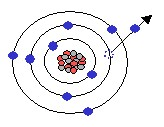 |
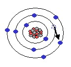 |
|
Figura 4.- (a) Ionización. (b) Excitación |
|
Si en cambio, la energía recibida no es la necesaria para producir la ionización, pero si suficiente para que pase a ocupar un estado energético correspondiente a un nivel energético superior, produciéndose una excitación atómica (Fig. 4–b).
Cuando una partícula cargada penetra en un medio material, al tener una carga eléctrica, aparecen unas fuerzas de origen eléctrico entre ella y las cargas eléctricas que poseen los átomos del material (positiva en el núcleo y negativas en la corteza), estas fuerzas se manifiestan en forma de atracciones o repulsiones con la partícula, en función de su carga, por lo que se producen interacciones con los átomos, los electrones atómicos y los núcleos atómicos que componen el material.
La interacción con el átomo y con los electrones de la corteza, da lugar a las denominadas colisiones elásticas e inelásticas. En las primeras se produce una conservación de la energía cinética total del sistema y en las segundas parte de la energía cinética de la partícula incidente se utiliza en producir excitaciones o ionizaciones en los átomos.
Con el núcleo atómico y tratándose de electrones se produce un cambio importante en la dirección y velocidad de la partícula incidente, emitiéndose radiación electromagnética que recibe el nombre de radiación de frenado o de Bremsstrahlung (Fig. 5).
El resultado de todas estas interacciones da lugar a una pérdida de energía de las partículas incidentes, de forma que estas se van frenando (perdiendo velocidad) y acaban por ser absorbidas por el material, generando a lo largo de su recorrido pares iónicos, por lo que reciben el nombre de radiaciones directamente ionizantes.
| 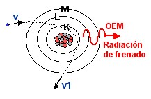 |
|
Figura 5.- Radiación de frenado |
Se define el alcance como el mínimo espesor de material necesario para que todas las partículas incidentes resulten absorbidas, es decir, que pierdan toda su energía. Este parámetro depende del material y de las características de las partículas incidentes.
Si se compara el alcance de las partículas b con las a, las primeras al tratarse de electrones, poseen una masa mucho menor que las a por lo que el poder de ionización de las b es mucho más pequeño y su alcance mayor, presentando al mismo tiempo una trayectoria con mayores cambios de dirección, que hace que la pérdida de energía por radiación de frenado sea mayor que en las a. Por ejemplo para una energía de las partículas de1 MeV y en el seno del aire, el alcance de los electrones es de 330 cm y para las partículas a de solo 0,5 cm.
Al no tener los fotones carga eléctrica, los fenómenos de interacción con el medio son de naturaleza completamente distinta al caso de las partículas cargadas, pudiéndose dar el caso de que aunque el espesor del medio sea muy extenso, el fotón lo pueda atravesar sin que se produzca el fenómeno de la interacción, en cuyo caso se dice que el fotón se ha transmitido a través del medio.
Al igual que en el caso de las partículas cargadas la interacción de fotones con la materia depende de su energía y de la naturaleza del medio, siendo de carácter probabilístico, aunque con una probabilidad de interacción mucho menor que la de aquellas, para partículas de la misma energía, por lo que su penetración en un medio material es mucho mayor.
Tres son los principales mecanismos de interacción: efecto fotoeléctrico, efecto Compton y formación de pares. Como resultado de los mismos se producen ionizaciones en el medio, por lo que son radiaciones ionizantes, pero por no tener carga eléctrica, reciben el nombre de radiaciones indirectamente ionizantes.
El efecto fotoeléctrico consiste en la absorción completa de la energía del fotón incidente por el átomo, de tal forma que dicha energía es completamente transferida a un electrón, que resulta expulsado de su órbita abandonando el átomo (Fig. 6) este electrón así expulsado recibe el nombre de fotoelectrón.
Para que se produzca este efecto se requiere que la energía E γ del fotón incidente sea mayor o igual que la energía W de enlace del electrón expulsado, siendo el resto de la energía (E e en la Fig. 6) utilizada en comunicar velocidad a este electrón.
| 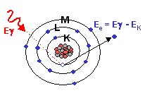 |
|
Figura 6.- Efecto fotoeléctrico |
Cuando el fotoelectrón procede de una capa interna, se produce una reorganización de los electrones de la corteza, de forma que se produce radiación característica y/o electrones Auger.
La probabilidad de que se produzca el efecto fotoeléctrico es directamente proporcional a Z 4 e inversamente proporcional a E γ 3 , por lo que para un material dado se produce una rápida disminución de este efecto al aumentar la energía de los fotones incidentes, salvo en aquellas energías que se corresponden con las energías de enlace de los electrones, en las que se produce un aumento brusco del mismo.
En este proceso el fotón incidente interacciona con un electrón, normalmente perteneciente a una capa externa del átomo, al que transfiere una cierta energía arrancándolo del átomo y el resto de energía aparece como un fotón disperso). El ángulo θ que forma la trayectoria del fotón disperso con la dirección del fotón incidente puede variar entre 0º y 180º y recibe el nombre de ángulo de dispersión (scattering).
La energía E γ ’ del fotón disperso está relacionado con la energía E γ del fotón incidente, mediante la relación:
E γ ’ = E γ /[1 + ( E γ /511)(1 – cos θ)]
en donde tanto E γ ’ como E γ están expresados en keV.
| 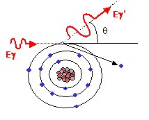 |
|
Figura 7.- Efecto Compton |
Por otro lado la energía del electrón expulsado Ee (electrón de rechazo) viene dada por la expresión E e = E γ - E γ ’ , despreciando la energía de ligadura del electrón, pues al ser de una capa externa es muy pequeña comparada con E γ .
La probabilidad de producción del efecto Compton es proporcional al número atómico Z del material e inversamente proporcional a la energía del fotón incidente.
Consiste en la desaparición del fotón incidente con la aparición de un electrón y un positrón, como consecuencia de la interacción del fotón con el núcleo atómico (Fig. 8). En este proceso se produce la conversión entre energía y masa, con la aparición de un electrón y un positrón.
| 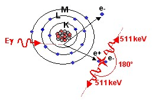 |
|
Figura 8.- Formación de pares |
Para que se pueda producir se requiere que el fotón incidente tenga una energía superior a 1,02 MeV, que es el doble de la energía correspondiente a la masa del electrón en reposo. El exceso de energía a dicho valor se utiliza en comunicar energía a las dos partículas.
Posteriormente tanto el electrón como el positrón ceden su energía mediante procesos de interacción de partículas cargadas con materia, quedando el electrón absorbido en el medio, mientras que el positrón finaliza su existencia combinándose con un electrón, produciéndose una reacción de aniquilación y apareciendo dos fotones de energía 0,511 MeV en sentidos opuestos.
Los procesos de interacción de fotones con materia descritos en los anteriores apartados, son una explicación a escala microscópica de lo que ocurre cuando los fotones considerados individualmente penetran en un medio material. Cada uno de estos procesos presenta una determinada probabilidad de que se produzca, que en general depende de la energía de los fotones y del medio material.
A escala macroscópica, el resultado de estas interacciones implica que el haz de fotones va cediendo energía a medida que se propaga a través del medio material y se va produciendo una desaparición progresiva de los mismos, produciéndose una atenuación del haz de radiación. Al mismo tiempo se genera una ionización (producción de pares iónicos) en el medio material.
Bajo determinadas condiciones se puede comprobar, que el número de fotones N existentes después de que un haz de N 0 fotones incide sobre un espesor x de material, viene dado por la expresión:
| 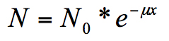 |
en donde μ recibe el nombre de coeficiente lineal de atenuación que se mide en cm -1 , el coeficiente de atenuación puede también expresarse en función de la masa del material, recibiendo entonces el nombre de coeficiente másico de atenuación, que se obtiene dividiendo μ por la densidad del material, expresándose en unidades de cm 2 /g. Este coeficiente presenta la ventaja de que es independiente del estado físico del medio material.
Se define la capa hemirreductora y decimorreductora para un material dado y para una energía de radiación determinada, como el espesor de material necesario para reducir el haz a la mitad o a la décima parte respectivamente.
| 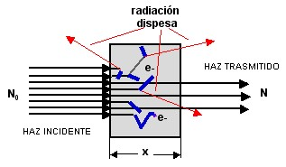 |
|
Figura 9.- Atenuación de fotones |
Cuando las radiaciones ionizantes atraviesan un medio material, van cediendo su energía en el medio (interacciones) y produciendo ionizaciones. En cada punto P de volumen Δv y masa Δm se depositará una pequeña cantidad de energía Δe, se define entonces la dosis absorbida D en el punto P al cociente:
| 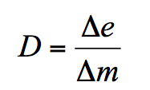 |
La unidad en el Sistema Internacional (SI) es el julio por kilogramo, que recibe el nombre de gray (Gy). La unidad antigua es el rad (rad), siendo 1 Gy = 100 rad.
Se ha observado que la probabilidad de que se produzcan un daño biológico depende no sólo de la dosis absorbida sino también del tipo y energía de la radiación que ha dado lugar a dicha dosis. Para tener esto en cuenta se define la dosis equivalente H en un tejido u órgano T, como:
| 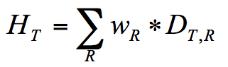 |
en donde D T,R representa la dosis absorbida promediada sobre el tejido
|
Tabla 1.- Factores de ponderación de la radiación |
|
|
Tipo radiación |
w R |
|
Fotones |
1 |
|
Electrones y muones |
1 |
|
Protones y piones cargados |
2 |
|
Partículas alfa, fragmentos de fisión e iones pesados |
20 |
|
Neutrones En < 1 MeV |
2,5+18,2e-[1n(2En)]²/6 |
|
Neutrones 1MeV ≤ En ≤ 50 MeV |
5,0+17,0e-[1n(2En)]²/6 |
|
Neutrones En > 50 MeV |
2,5+3,25e-[1n(0,04En)]²/6 |
u órgano T, debido a la radiación R y w R es el factor de ponderación de la radiación que depende del tipo y energía de la radiación y que se presenta en la tabla 1 (ICRP 103).
La unidad en el SI es el julio por kilogramo, que recibe el nombre de sievert (Sv). La unidad antigua es el rem, siendo 1 Sv = 100 rem.
La relación entre la probabilidad de aparición de efectos estocásticos (probabilísticos) y la dosis equivalente también depende del órgano o tejido irradiado, es por ello que para expresar la combinación de distintas dosis equivalentes en diferentes tejidos de forma que se pueda relacionar con la dosis equivalente a cuerpo entero se introduce la magnitud de dosis efectiva E, como:
| 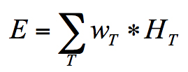 |
siendo w T el factor de ponderación del tejido T y H T la dosis equivalente en el tejido u órgano T. En la siguiente tabla, se presentan estos valores para los distintos tejidos u órganos (ICRP 103).
Tabla 2.- Factores de ponderación de los tejidos
|
Tejido u órgano |
w T |
∑w T |
|
Médula ósea, colon, pulmón, estómago, mama, resto tejidos |
0,12 |
0,72 |
|
Gónadas |
0,08 |
0,08 |
|
Vejiga. esófago, hígado, tiroides |
0,04 |
0,16 |
|
Superficie del hueso, cerebro, glándulas salivares, piel |
0,01 |
0,04 |
|
Total |
1,00 |
La unidad en el SI es el julio por kilogramo, que recibe el nombre de sievert (Sv). La unidad antigua es el rem, siendo 1 Sv = 100 rem.
Cuando se produce una incorporación en el organismo, hay un periodo de tiempo durante el cual el material radiactivo está dando lugar a que los tejidos corporales reciban dosis, la dosis comprometida siempre está referida a un intervalo de tiempo, que si no se especifica, se sobreentiende que se refiere a un periodo de 50 años en el caso de adultos, y desde el momento de la incorporación hasta la edad de 70 años para los niños.
La dosis comprometida se define como la dosis resultante de la incorporación en el organismo de un material radiactivo.
De los procesos de interacción de la radiación con la materia, se desprende que los resultados inmediatos son las excitaciones e ionizaciones que produce en el medio con el que interacciona, estos efectos dan lugar a que se pongan de manifiesto distintos procesos físicos o químicos y que van a ser las bases de la detección. Por ello obligatoriamente en todo equipo de medida de la radiación existe un elemento que recibe el nombre de detector, en el que se como resultado de estos procesos se obtendrá una señal, normalmente muy débil, pero que conveniente amplificada y tratada nos permite conocer el valor de la medida.
En general, en la evaluación de la radiación, tres son los parámetros que nos pueden interesar y que en cada caso da lugar a una familia distinta de equipos de medida:
Además de esta clasificación, se introduce otra que tiene en cuenta el material del que esta formado el detector, que puede ser un gas, un sólido o un líquido.
En este tipo de detectores, el material de detección es aire u otro tipo de gas o mezcla de gases, que se encuentra en el interior del elemento detector. El proceso de interacción da lugar a que se produzca la ionización del gas y la medida de la carga eléctrica producida, tras un proceso de amplificación por medios electrónicos da lugar a la obtención de la medida (Fig. 10).
Si la carga eléctrica generada en el detector se determina de manera individual para cada evento de interacción, se obtienen unos impulsos de corriente n, cuyo contaje da como resultado el número de interacciones habidas en el detector por unidad de tiempo y el equipo de medida actúa entonces como contador.
| 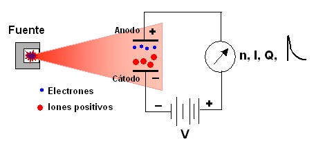 |
|
Figura 10.- Detector de gas |
Si en lugar de contar los impulsos generados en el detector, se realiza una medida de la carga eléctrica Q total generada, que como es proporcional a la energía depositada en el detector, se obtiene una medida de la energía absorbida por el detector y entonces el equipo de medida actúa como un dosímetro.
Si en lugar de acumular la carga eléctrica producida se mide la intensidad I, que como representa la carga eléctrica por unidad de tiempo, se obtiene una medida de la tasa de dosis (dosis por unidad de tiempo).
Si en cambio lo que se hace es medir la altura de los impulsos individuales y cuando estos son proporcionales a la energía de la partícula que ha sido la causante de su producción, se obtiene un espectrómetro.